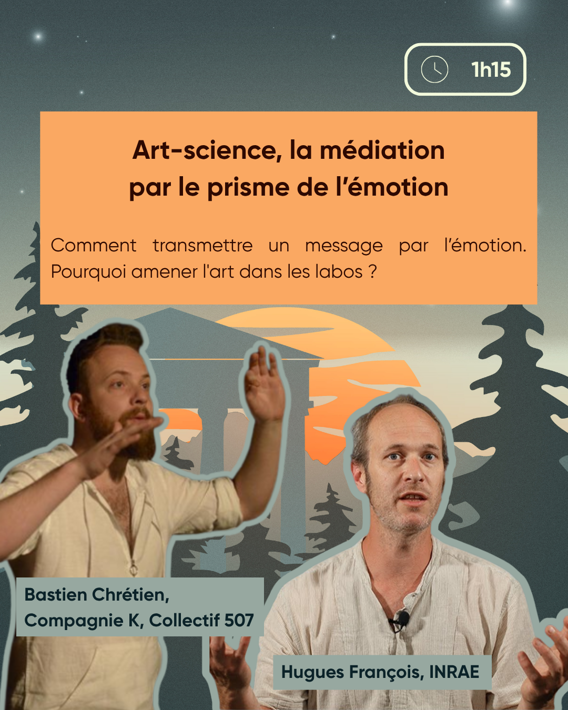

Art-science, la médiation par le prisme de l'émotion


Résumé
Comment transmettre un message par l'émotion. Pourquoi amener l'art dans les labos ?
intervenant·es
Bastien Chrétien est comédien et metteur en scène notamment associé au Festival Textes en l'air et au prunier sauvage. Il a notamment co-écrit et réalisé la série "Tout va bien. Changez rien !" ainsi que la performance artistique "Aurores boréales & fin du monde". Avec son acolyte Cobie (street art) il crée "En route vers l'avenir de le futur de demain" (radio, exposition, Happening théâtral...).
Hugues François Hugues François est chercheur en aménagement spécialisé dans l'adaptation du tourisme de montagne dans le contexte du changement climatique au Laboratoire Ecosystèmes et Sociétés En Montagne (LESSEM) de l'INRAE. En tant que membre du comité de pilotage du Groupe Régional d'Expertise sur le Climat (GREC) Alpes-Auvergne, il est particulièrement sensible aux enjeux de dissémination des connaissances scientifiques. Il contribue ainsi à la fois au développement du service climatique ClimSnow, directement en lien avec ses travaux, et à l'organisation de dispositifs de médiation arts-science tels que ceux co-élaborés avec B. Chrétien et Cobie (ainsi que d'autres suprises en préparation !).
